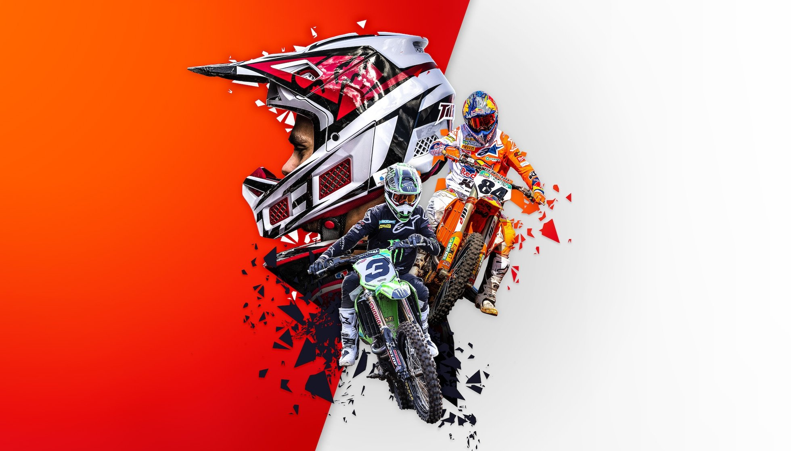

SAFETRAIL
Qual o objetivo do site?
Esse site foi criado para entusiastas que desejam compartilhar a alegria de explorar a natureza sobre duas rodas enquanto promovem práticas que beneficiam o meio ambiente e as comunidades locais. Cada trilha que destacamos tem uma história única, muitas vezes entrelaçada com as tradições e a cultura das regiões. Nosso propósito é preservar essas histórias e inspirar os trilheiros a valorizar e respeitar tanto as comunidades quanto a natureza que encontram pelo caminho.

Conservação Ambiental: Nosso Compromisso com o Planeta
Acreditamos que a preservação do meio ambiente é fundamental para garantir que as belezas naturais que tanto amamos explorar permaneçam intactas para as futuras gerações. A conservação ambiental está no coração de nossas atividades, e temos um compromisso firme com práticas sustentáveis que minimizam o impacto das trilhas de moto na natureza.

Práticas de Mínimo Impacto
-
Manutenção Regular: Realizar revisões periódicas nas motos para garantir que estejam em perfeito estado de funcionamento, evitando vazamentos e excesso de emissão de poluentes.
-
Rotas Designadas: Seguir trilhas previamente estabelecidas para minimizar a perturbação de áreas naturais sensíveis.
-
Redução de Velocidade: Manter velocidades moderadas para reduzir a erosão do solo e o impacto em habitats naturais.
-
Não Deixar Resíduos: Garantir que todo o lixo seja coletado e descartado corretamente, mantendo as trilhas limpas e seguras para a vida selvagem.

3 Trilhas de Moto Trail no Brasil

Caminho dos Diamantes
Minas Gerais O Caminho dos Diamantes passou a ter grande importância a partir de 1729, quando as pedras preciosas de Diamantina ganharam destaque nas economias brasileira e portuguesa. Além da história de seus municípios, da cultura latente e da gastronomia típica, o Caminho dos Diamantes destaca-se pela beleza natural.
Trilha Casca Danta
Minas Gerais Conheça este trilha bate-volta de 8,7-km, perto de São Roque de Minas, Minas Gerais. Geralmente considerado um percurso desafiador, é preciso uma média de 3 h 39 min para ser concluído. Este é um trilha popular para Caminhadas, mas você ainda pode ter algum momento de tranquilidade nos horários mais calmos do dia. A trilha está aberta durante o ano todo e é linda para visitar a qualquer momento.
Cachoeira do Fundão
Minas Gerais Tente este trilha bate-volta de 21,2-km, perto de São Roque de Minas, Minas Gerais. Geralmente considerado um percurso desafiador. Este é um trilha popular para backpacking, acampamento e Caminhadas, mas você ainda pode ter algum momento de tranquilidade nos horários mais calmos do dia. A trilha está aberta durante o ano todo e é linda para visitar a qualquer momento.Da onde surgiu esse esporte ?
O esporte ganhou destaque após a Segunda Guerra Mundial, quando os soldados voltaram com suas motos militares e começaram a competir em corridas informais em terrenos variados. A popularidade aconteceu mesmo nas décadas de 1950 e 1960 na Europa.